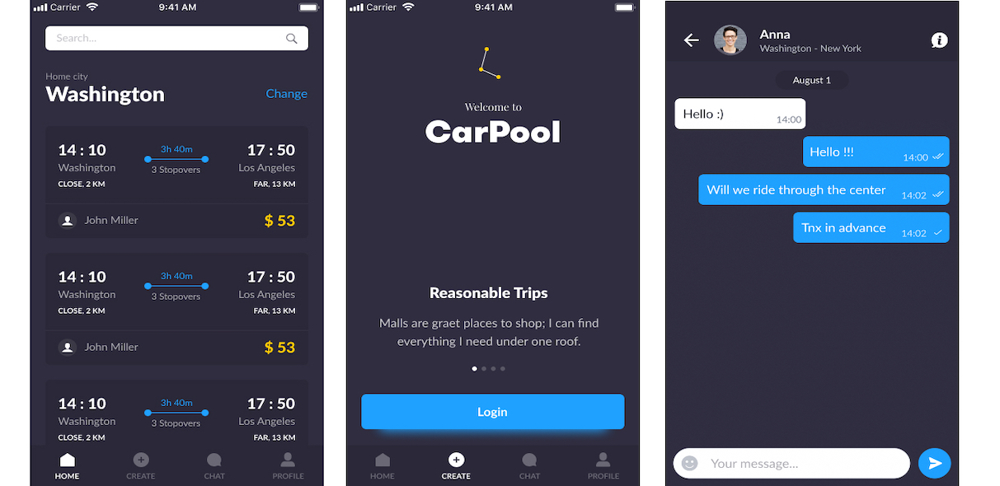

Jan 2024 - Jun 2024 | Seattle, WA
ML Research
As part of my university capstone project with TE Connectivity, I spearheaded machine learning application into their expander line process.
Self-teaching myself machine learning through research, hands-on practice, and rigorous study, I applied my skills to real-world problems.
Leveraging tools such as TensorFlow and PyTorch, I implemented complex algorithms including Convolutional Neural Networks (CNNs) and Recurrent Neural Networks (RNNs), specifically Long Short-Term Memory (LSTM) networks, to optimize the expander line process.
These models resulted in a ~20% reduction in scrap material, significantly decreasing the dependency on operator intuition and saving hundreds of engineering hours.
Throughout the capstone project with TE Connectivity, I took ownership of implementing key machine learning solutions that directly impacted the expander line process.
Working closely with their engineers, I ensured our collaboration was seamless, combining my technical expertise with their operational knowledge to drive meaningful results.
I proactively guided my team, facilitating problem-solving discussions and setting a clear direction for integrating machine learning into existing workflows.
Model Performance Analytics
To further enhance operational efficiency, I developed a custom analytics dashboard using Python, Streamlit, and MySQL.
The webpage provided real-time insights into machine parameters, integrating predictive machine learning models that anticipated key performance indicators.
This reduced manual intervention, streamlining workflows by ~30%.
Throughout the project, I utilized my full stack knowledge—ranging from JavaScript for frontend components to Streamlit for deployment—to ensure a seamless integration of these AI-driven solutions.
My ability to self-learn and independently apply machine learning to solve industry-specific problems significantly contributed to improving product quality and reducing operational costs.
By promoting a strong focus on quality and performance, I helped streamline operations, reduce material waste, and improve overall productivity.
This collaborative effort not only showcased my technical contributions but also strengthened the relationship between our team and TE Connectivity, ensuring the successful delivery of innovative solutions.
Highlights:
University of Washington
2022-2024 | Seattle, WA
BS in Electrical & Computer Engineering
- Algorithms & Data Structures
- Database Systems
- Fundamentals of ML Optimization
- ML for Sig Processing Applications
- Probability and Stats for Engineers
- Digital Circuits and Systems
- Advanced Multivariable Calculus
Teaching staff for an ECE class at UW
Carpool App
Developed and launched an iOS app from the ground up, managing all phases of the project as a freelance developer. The app is now discontinued.
- Lightning-fast scrolling on the home feed screen with an impressive 60 FPS performance
- Improved trip search efficiency
- Seamless and smooth user interface

Internships
Stealth Startup
Summer 2023
[ Learn More ]
Realm AI was a startup that would revolutionize the home buying process by utilizing open-source Large Language Models (LLMs) and creating a single place resource for new home buyers. I conducted in-depth research and integrated advanced LLMs to elevate the startup's technological framework.
R&D Engineering Intern
-
Fine-tuned the model that achieved a 90% success rate and successfully passed the real estate exam which qualified to get the real estate agent license in over 40 states.
-
Implemented advanced LLMs, driving a ~20% increase in predictive analytics accuracy and a ~15% performance boost, significantly enhancing user satisfaction and achieving key business goals.
Webkey Spring, Summer 2022
[ Learn More ]
Webkey is a full-service web design firm specializing in dynamic, database-driven websites, collaborative project management tools, and online publishing. I worked on multiple projects where I did full-stack web development.
Software Engineering Intern
-
Developed and maintained a complex web application using Python/Django for the backend and JavaScript/React for the frontend, resulting in a ~30% increase in user engagement and a 20% reduction in load times.
-
Implemented RESTful APIs and optimized database queries, resulting in a 25% improvement in system performance and supporting over 10,000 concurrent users.
-
Implemented multiple custom-made plugins using the Django framework to automate 100+ features of a large CMS application, which boosted efficiency and reduced operational costs.
-
Stack: Python/Django, JavaScript, PostgreSQL, HTML, CSS, React/Typescript, Linux,
Carpool
Summer 2019
[ Learn More ]
At Carpool, I built and launched an iOS app from scratch, handling all aspects of the project as a freelance developer.
Software Engineering Intern
-
Developed and launched a scalable iOS carpool app, improving trip search efficiency by 40%, which reduced user search time and increased user engagement by 30%, leading to higher app retention and satisfaction.
-
Improved scrolling performance of the home feed screen reaching 60 FPS which enabled the customers to enjoy a smooth user experience.
-
Stack: Swift, SwiftUI, RxSwift, Xcode, Firebase, Realm